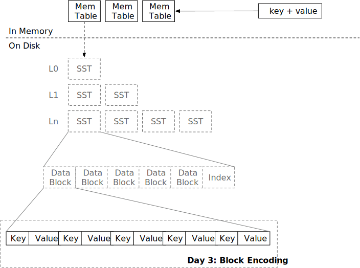

块

在本章中，您将：
- 实现 SST 块编码。
- 实现 SST 块解码和块迭代器。
要将测试用例复制到启动代码并运行它们，请执行以下操作：
cargo x copy-test --week 1 --day 3
cargo x scheck
任务 1：块构建器
您已经在前面两章中实现了 LSM 存储引擎的所有内存结构。现在是时候构建磁盘结构了。磁盘结构的基本单元是块。块通常为 4 KB 大小（大小可能因存储介质而异），相当于操作系统中的页面大小和 SSD 上的页面大小。一个块存储有序的键值对。一个 SST 由多个块组成。当 memtable 的数量超过系统限制时，它会将 memtable 刷新为 SST。在本章中，您将实现块的编码和解码。
在本任务中，您需要修改：
src/block/builder.rs
src/block.rs
我们教程中的块编码格式如下：
----------------------------------------------------------------------------------------------------
| 数据区 | 偏移区 | 额外 |
----------------------------------------------------------------------------------------------------
| 条目 #1 | 条目 #2 | ... | 条目 #N | 偏移 #1 | 偏移 #2 | ... | 偏移 #N | 元素数量 |
----------------------------------------------------------------------------------------------------
每个条目是一个键值对。
-----------------------------------------------------------------------
| 条目 #1 | ... |
-----------------------------------------------------------------------
| 键长度 (2B) | 键 (键长度) | 值长度 (2B) | 值 (变长) | ... |
-----------------------------------------------------------------------
键长度和值长度均为 2 字节，这意味着它们的最大长度为 65535。（内部存储为 u16）
我们假设键始终不为空，而值则可能为空。空值意味着在系统的其他部分看来，相应的键已被删除。对于 BlockBuilder 和 BlockIterator，我们只需将空值视为空值。
在每个块的末尾，我们将存储每个条目的偏移量和总条目数。例如，如果第一个条目位于块的第 0 个位置，第二个条目位于块的第 12 个位置。
-------------------------------
|偏移|偏移|元素数量|
-------------------------------
| 0 | 12 | 2 |
-------------------------------
块的尾部如上所示。每个数字存储为 u16。
块有一个大小限制，即 target_size。除非第一个键值对超过目标块大小，否则应确保编码的块大小始终小于或等于 target_size。（在提供的代码中，这里的 target_size 本质上是 block_size）
当调用 build 时，BlockBuilder 将生成数据部分和未编码的条目偏移量。这些信息将存储在 Block 结构中。由于键值条目以原始格式存储，偏移量存储在单独的向量中，这减少了在解码数据时不必要的内存分配和处理开销——您需要做的就是将原始块数据复制到 data 向量中，并每 2 字节解码条目偏移量，而不是创建类似 Vec<(Vec, Vec)> 的东西来在内存中存储一个块中的所有键值对。这种紧凑的内存布局非常高效。
在 Block::encode 和 Block::decode 中，您需要按照上述格式编码/解码块。
任务 2：块迭代器
在本任务中，您需要修改：
src/block/iterator.rs
现在我们有了一个编码的块，我们需要实现 BlockIterator 接口，以便用户可以在块中查找/扫描键。
BlockIterator 可以通过 Arc 创建。如果调用 create_and_seek_to_first，它将定位在块中的第一个键。如果调用 create_and_seek_to_key，迭代器将定位在第一个 >= 提供的键的键。例如，如果块中有 1, 3, 5。
#![allow(unused)] fn main() { let mut iter = BlockIterator::create_and_seek_to_key(block, b"2"); assert_eq!(iter.key(), b"3"); }
上述 seek 2 将使迭代器定位在下一个可用的键 2，即 3。
迭代器应从块中复制 key 并存储在迭代器内部（我们将来会有键压缩，您必须这样做）。对于值，您应该仅在迭代器中存储开始/结束偏移量，而不复制它们。
当调用 next 时，迭代器将移动到下一个位置。如果我们到达块的末尾，我们可以将 key 设置为空，并从 is_valid 返回 false，以便调用者可以切换到另一个块（如果可能）。
测试您的理解
- 在块中查找键的时间复杂度是多少？
- 在您的实现中，当查找不存在的键时，光标会停在什么位置？
- 因此，
Block只是一个原始数据向量和一个偏移向量。我们可以将它们改为Byte和Arc<[u16]>，并将所有迭代器接口改为返回Byte而不是&[u8]吗？（假设我们使用Byte::slice返回块的切片而不复制。）优点/缺点是什么？ - 在您的实现中，写入块的数字的字节序是什么？
- 您的实现是否容易受到恶意构建的块的影响？如果用户故意构建一个无效的块，是否会有无效的内存访问或 OOM？
- 一个块可以包含重复的键吗？
- 如果用户添加一个大于目标块大小的键会发生什么？
- 考虑 LSM 引擎构建在对象存储服务（S3）上的情况。您将如何优化/改变块格式和参数以使其适合此类服务？
- 你喜欢奶茶吗？为什么或为什么不？
我们不提供这些问题的参考答案，欢迎在 Discord 社区中讨论。
额外任务
- 反向迭代器。 您可以为
BlockIterator实现prev，以便能够反向迭代键值对。您还可以有一个反向合并迭代器和反向 SST 迭代器（在下一章），以便您的存储引擎可以进行反向扫描。
我们非常欢迎您的反馈。欢迎加入我们的Discord社区。发现问题？请在github.com/skyzh/mini-lsm上创建问题/拉取请求。版权所有 © 2022 - 2024 Alex Chi Z. 保留所有权利。